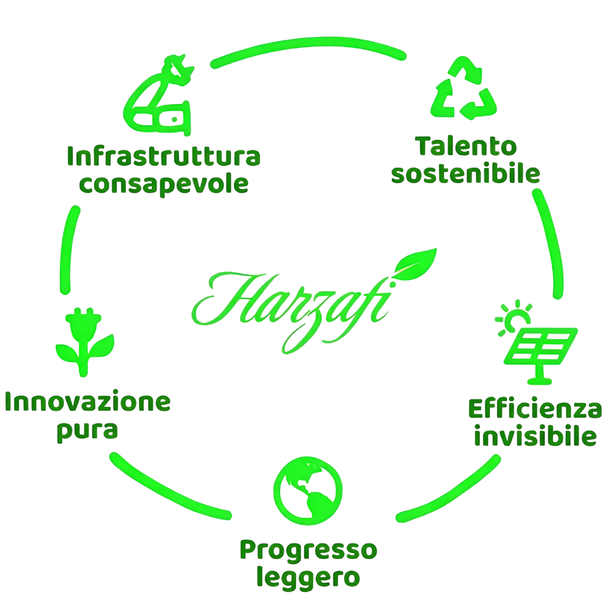

TUTTO IN ORDINE
Ogni materia, al suo posto.
Trova in pochi istanti appunti, slide e materiali delle tue lezioni.
Harzafi Notes
Trova in pochi istanti appunti, slide e materiali delle tue lezioni.
Un archivio digitale accessibile da computer, tablet e telefono.
I materiali condivisi restano organizzati e facili da consultare.
Cerca per titolo o materia e raggiungi il materiale che ti serve senza perderti nell’archivio.
Salva i file che usi più spesso e ritrovali al volo nella tua raccolta Preferiti.
I materiali più recenti restano in evidenza, così sai subito cosa è stato aggiunto.
Harzafi Notes trasforma l’esperienza scolastica riducendo l’impronta ecologica di ogni studente. Digitalizzando appunti, dispense e verifiche in un unico archivio condiviso, diciamo addio allo spreco di carta per fare spazio a un’infrastruttura scolastica moderna, consapevole e leggera per il pianeta.
